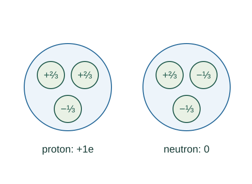

Build proton and neutron charge from quarks
The simple valence-quark model assigns two up quarks and one down quark to a proton, and one up with two down to a neutron. Adding their charges explains the observed net charges.
What the symbols mean
qu = +2e/3: up-quark charge; qd = −e/3: down-quark charge; e > 0: elementary charge magnitude.
When this applies
Valence quantum-number accounting for ordinary nucleons. Real nucleons also contain gluons and quark–antiquark fluctuations; this is not a full microscopic mass model.
Developing the argument

State the constituent assignments
A proton has valence content uud and a neutron udd. These assignments and fractional quark charges are physical model inputs constrained by particle observations.
Add proton charges
Charge is additive. Two up-quark charges and one down-quark charge sum to one positive elementary charge.
Add neutron charges
One up-quark charge and two down-quark charges cancel overall. A neutral composite can therefore contain charged constituents.
Check baryon number separately
Each quark carries baryon number 1/3; each antiquark carries −1/3. Three valence quarks give a nucleon baryon number one. Gluons and quark–antiquark pairs add no net baryon number.
A closer lookHow can charge be conserved during particle changes? ↗Charge conservation and quantizationA worked example
Changing a down quark into an up quark raises hadron charge by e. In neutron beta decay, the emitted electron carries −e, keeping total charge balanced.
Derivation behind this calculation ↗A point to keep straight
Adding free quark masses does not reproduce nucleon mass. The dynamics and energy of the strong interaction are essential.
Check the assumptions and derivation ↗